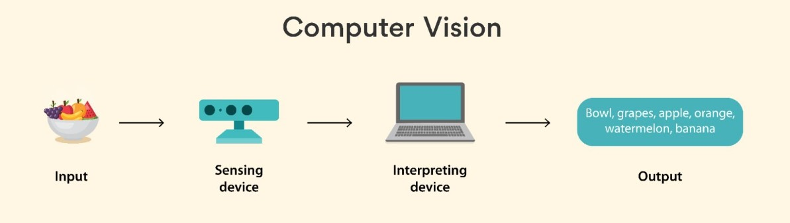

What is Computer Vision?
Computer Vision is a fascinating field of Artificial Intelligence (AI) that teaches computers to interpret and make decisions based on visual data like images and videos. Think of it as giving machines the ability to see and understand the world, just like humans do.
For example, when you upload a photo to your phone, it can automatically recognize faces, objects, and even suggest filters. That's Computer Vision in action!
With Computer Vision, machines can perform tasks like identifying objects, detecting patterns, and even reading text in images. It is a key technology behind innovations such as facial recognition, autonomous cars, and medical imaging.
How Does Computer Vision Work?
Computer Vision involves a combination of mathematics, statistics, and advanced algorithms to analyze visual data. Here are the main steps involved:
- Image Input: The process begins by capturing an image or video using a camera. This image is then converted into digital data for analysis.
- Feature Detection: The system looks for patterns, edges, colors, and other details in the image to understand what it contains.
- Object Recognition: Machine learning models are used to classify objects in the image, such as identifying animals, vehicles, or text.
- Decision Making: Based on the recognized objects, the system makes decisions, such as labeling an image or triggering an action.
These steps involve the use of advanced AI techniques and large datasets to train models for accuracy and efficiency.
Applications of Computer Vision
Computer Vision is transforming industries and improving lives in numerous ways. Let’s explore some of its key applications:
- Healthcare: AI-powered imaging tools can detect diseases like cancer or pneumonia from X-rays and MRIs with remarkable accuracy.
- Transportation: Self-driving cars use Computer Vision to identify road signs, pedestrians, and traffic lights.
- Retail: Automated checkout systems in stores recognize and tally items in your cart without the need for a cashier.
- Security: Facial recognition systems enhance security by identifying individuals in real-time.
- Education: Interactive learning tools use visual recognition to create immersive and engaging educational experiences.
Challenges in Computer Vision
While Computer Vision has incredible potential, it also faces several challenges, such as:
- Complex Scenes: Understanding images with overlapping objects or poor lighting is difficult for machines.
- Large Data Requirements: Training a model requires huge amounts of labeled data, which can be time-consuming and expensive to collect.
- Bias and Errors: Models can sometimes misinterpret data, leading to incorrect predictions, especially if trained on biased datasets.
Despite these challenges, ongoing research and advancements in AI continue to push the boundaries of what Computer Vision can achieve.